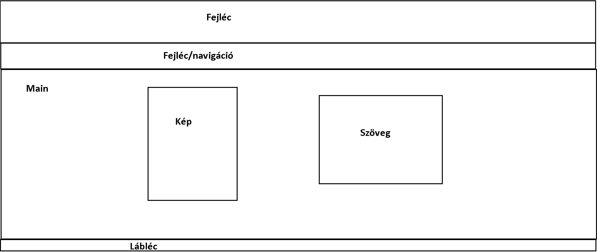
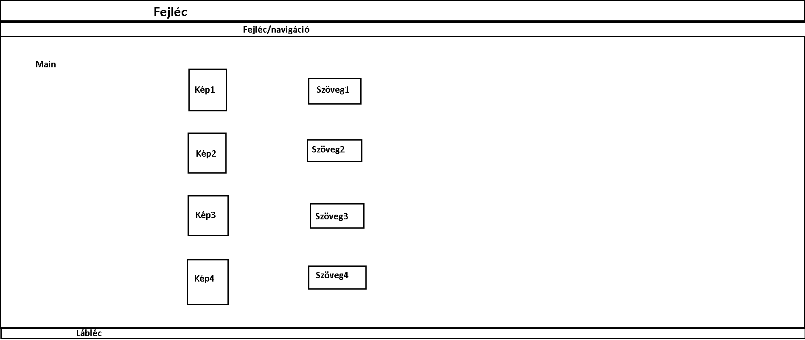

"Rólam", illetve "Tanulmányaim" című oldalak terve:

"Hobbijaim" című oldal terve:

Az eredeti terveim megegyeznek a kivitelezett formákkal, nem változtattam semmit az elgondolt változathoz képest.